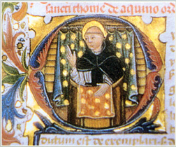

|
CORPUS THOMISTICUM
|
| S. THOMAE DE AQUINO |
| OPERA OMNIA |
| |
|  |
recognovit et instruxit Enrique Alarcón automato electronico
Pompaelone ad Universitatis Studiorum Navarrensis aedes a MM A.D. |
|
| |
|
|
|
| |
| |
| OPERA MAIORA |
| |
| Scriptum super Sententiis |
| |
| Prooemium |
Quaestio 1 |
| |
| Liber 1 |
| Distinctio 1 |
Distinctio 2 prooemium |
| Distinctio 2 articuli 1-2 |
|
| Nota editoris |
Distinctio 2 articulus 3 |
| Distinctio 2 articuli 4-5 |
Distinctio 3 |
| Distinctiones 4-7 |
Distinctio 8 |
| Distinctiones 9-18 |
Distinctiones 19-21 |
| Distinctiones 22-25 |
Distinctiones 26-32 |
| Distinctiones 33-34 |
Distinctiones 35-41 |
| Distinctiones 42-44 |
Distinctiones 45-48 |
| |
| Liber 2 |
| Prooemium |
|
| Distinctio 1 |
Distinctiones 2-4 |
| Distinctiones 5-8 |
Distinctiones 9-11 |
| Distinctiones 12-15 |
Distinctiones 16-20 |
| Distinctio 21 |
Distinctio 22 |
| Distinctiones 23-29 |
Distinctiones 30-33 |
| Distinctio 34 |
Distinctiones 35-41 |
| Distinctiones 42-43 |
Distinctio 44 |
| |
| Liber 3 |
| |
| Fragmenta primarum redactionum in autographo |
| Nota editoris |
| Distinctio 1 |
Distinctiones 4-22 |
| Distinctiones 23-34 |
|
| |
| Recensio vulgata |
| Prooemium |
|
| Distinctio 1 |
Distinctiones 2-4 |
| Distinctio 5 |
Distinctiones 6-12 |
| Distinctiones 13-16 |
Distinctiones 17-20 |
| Distinctiones 21-22 |
Distinctiones 23-25 |
| Distinctio 26 |
Distinctiones 27-32 |
| Distinctio 33 |
Distinctiones 34-35 |
| Distinctio 36 |
Distinctiones 37-40 |
| |
| Liber 4 |
| Prooemium |
|
| Distinctio 1 |
Distinctio 2 |
| Distinctiones 3-6 |
Distinctio 7 |
| Distinctiones 8-10 |
Distinctiones 11-12 |
| Distinctio 13 |
Distinctio 14 |
| Distinctio 15 |
Distinctiones 16-17 |
| Distinctiones 18-19 |
Distinctiones 20-22 |
| Distinctio 23 |
Distinctiones 24-25 |
| Distinctio 26 |
Distinctiones 27-33 |
| Distinctiones 34-36 |
Distinctiones 37-42 |
| Distinctiones 43-44 |
Distinctiones 45-46 |
| Distinctiones 47-48 |
Distinctio 49 quaestio 1 |
| Distinctio 49 quaestio 2 |
Distinctio 49 quaestio 3 |
| Distinctio 49 quaestio 4 |
Distinctio 49 quaestio 5 |
| Distinctio 50 |
|
| |
| |
| Summa contra Gentiles |
| |
| Liber 1 |
| Capita 1-9 |
Capita 10-13 |
| Capita 14-28 |
Capita 29-36 |
| Capita 37-43 |
Capita 44-71 |
| Capita 72-96 |
Capita 97-102 |
| |
| Liber 2 |
| Capita 1-5 |
Capita 6-38 |
| Capita 39-45 |
Capita 46-55 |
| Capita 56-90 |
Capita 91-101 |
| |
| Liber 3 |
| Capita 1-63 |
Capita 64-110 |
| Capita 111-163 |
|
| |
| Liber 4 |
| Capita 1-26 |
Capita 27-78 |
| Capita 79-97 |
|
| |
| Primae redactiones |
| Characteres et signa |
Liber 1 |
| Liber 2 |
Liber 3 |
| |
| |
| Summa Theologiae |
| |
| Schema operis a J. Morán, I. Gamboa, J. Medina et G. Bañuelos instructum more Adobe Flash |
| |
| Prooemium |
| |
| Prima pars |
| Quaestio 1 |
Quaestio 2 |
| Quaestiones 3-14 |
Quaestiones 15-27 |
| Quaestiones 28-43 |
Quaestiones 44-49 |
| Quaestiones 50-64 |
Quaestiones 65-74 |
| Quaestiones 75-76 |
Quaestiones 77-83 |
| Quaestiones 84-89 |
Quaestiones 90-102 |
| Quaestiones 103-119 |
|
| |
| Prima Secundae |
| Prooemium |
|
| Quaestiones 1-5 |
Quaestiones 6-21 |
| Quaestiones 22-25 |
Quaestiones 26-39 |
| Quaestiones 40-48 |
Quaestiones 49-54 |
| Quaestiones 55-70 |
Quaestio 71 |
| Quaestio 72 |
Quaestio 73 |
| Quaestio 74 |
Quaestiones 75-84 |
| Quaestiones 85-89 |
Quaestiones 90-92 |
| Quaestio 93 |
Quaestio 94 |
| Quaestiones 95-97 |
Quaestiones 98-105 |
| Quaestiones 106-108 |
Quaestiones 109-114 |
| |
| Secunda Secundae |
| Prooemium |
|
| Quaestiones 1-16 |
Quaestiones 17-22 |
| Quaestiones 23-24 |
Quaestiones 25-26 |
| Quaestiones 27-33 |
Quaestiones 34-43 |
| Quaestio 44 |
Quaestiones 45-46 |
| Quaestiones 47-56 |
Quaestiones 57-60 |
| Quaestiones 61-78 |
Quaestio 79 |
| Quaestio 80 |
Quaestio 81 |
| Quaestiones 82-91 |
Quaestiones 92-100 |
| Quaestio 101 |
Quaestiones 102-105 |
| Quaestiones 106-108 |
Quaestiones 109-120 |
| Quaestio 121 |
Quaestio 122 |
| Quaestiones 123-140 |
Quaestiones 141-142 |
| Quaestio 143 |
Quaestiones 144-145 |
| Quaestiones 146-154 |
Quaestiones 155-169 |
| Quaestio 170 |
Quaestiones 171-178 |
| Quaestiones 179-182 |
Quaestiones 183-189 |
| |
| Tertia pars |
| Prooemium |
|
| Quaestio 1 |
Quaestiones 2-15 |
| Quaestiones 16-26 |
Quaestiones 27-39 |
| Quaestiones 40-45 |
Quaestiones 46-52 |
| Quaestiones 53-59 |
Quaestiones 60-65 |
| Quaestiones 66-71 |
Quaestio 72 |
| Quaestio 73 |
Quaestiones 74-77 |
| Quaestio 78 |
Quaestio 79 |
| Quaestiones 80-81 |
Quaestio 82 |
| Quaestio 83 |
Quaestiones 84-90 |
| |
| Fr. Rainaldus Romanus, Supplementum |
| Quaestiones 1-99 |
Appendices |
| |
| |
|
| QUAESTIONES |
| |
| Quaestiones disputatae |
| |
| De spiritualibus creaturis |
De unione Verbi |
| |
| |
| De veritate |
| Quaestio 1 |
Quaestiones 2-4 |
| Quaestiones 5-7 |
|
| Nota editoris |
De libro vitae |
| Quaestiones 8-9 |
Quaestio 10 |
| Quaestio 11 |
Quaestiones 12-13 |
| Quaestio 14 |
Quaestiones 15-17 |
| Quaestiones 18-19 |
Quaestio 20 |
| Quaestio 21 |
Quaestio 22 articuli 1-10 |
| Nota editoris |
Quaestio 22 articulus 11 |
| Quaestio 22 articuli 12-15 |
Quaestio 23 |
| Quaestio 24 |
Quaestiones 25-26 |
| Quaestiones 27-29 |
| |
| |
| De potentia |
| Quaestiones 1-2 |
Quaestio 3 |
| Quaestio 4 |
|
| Nota editoris |
Vincentius de Castronovo, Continuatio q. 4 a. 2 |
| Quaestiones 5-6 |
Quaestio 7 |
| Quaestiones 8-10 |
|
| |
| |
| Q. de anima |
| Prooemium |
|
| Articuli 1-13 |
Articuli 14-21 |
| |
| |
| De malo |
| Quaestio 1 |
Quaestiones 2-3 |
| Quaestiones 4-5 |
Quaestiones 6-7 |
| Quaestiones 8-15 |
Quaestio 16 |
| |
| |
| De virtutibus |
| Quaestio 1 ad articulum 2 |
|
| Nota editoris |
Vincentius de Castronovo, Continuatio q. 1 a. 2 |
| Quaestio 1 articuli 3-13 |
Quaestio 2 |
| Quaestio 3 |
Quaestio 4 |
| Quaestio 5 |
|
| |
| |
| Quaestiones de quolibet |
| |
| Prima series |
Secunda series |
| Quodlibet VI |
Quodlibet I |
| Quodlibet VII |
Quodlibet II |
| Quodlibet VIII |
Quodlibet III |
| Quodlibet IX |
Quodlibet IV |
| Quodlibet X |
Quodlibet V |
| Quodlibet XI |
Quodlibet XII |
| |
| |
|
| |
| OPUSCULA |
| |
| Opuscula philosophica |
| |
| De ente et essentia |
De principiis naturae |
| De unitate intellectus |
De aeternitate mundi |
| De substantiis separatis |
|
| |
| |
| Opuscula theologica |
| |
| De articulis Fidei |
De rationibus Fidei |
| Super Decretales |
|
| |
| |
| Principium Rigans montes |
| Recensio vulgata |
Reportatio altera |
| |
| |
| Compendium theologiae |
| Liber 1 capita 1-184 |
Liber 1 capita 185-246 |
| Liber 2 |
|
| |
| |
| Opuscula polemica pro mendicantibus |
| |
| Contra retrahentes |
De perfectione |
| |
| |
| Contra impugnantes |
| Prooemium |
Pars 1 |
| Partes 2-4 |
Pars 5 |
| |
| |
| Censurae |
| |
| Nota editoris |
Nicholaus de Crotone |
| Contra errores Graecorum |
Liber de Fide Trinitatis |
| |
| |
| De forma absolutionis |
|
| |
| |
| Rescripta |
| |
| Ad Bernardum |
Ad ducissam Brabantiae |
| De emptione |
De iudiciis astrorum |
| De mixtione elementorum |
De motu cordis |
| De operationibus occultis |
|
| |
| |
| Liber de sortibus |
| De sortibus |
Recensio brevior |
| |
| |
| De regno |
| Ad librum 2 caput 4 |
|
| Nota editoris |
Continuatio a Ptolomaeo de Luca |
| |
| |
| Responsiones |
| |
| De 6 articulis |
De 30 articulis |
| De 36 articulis |
De 43 articulis |
| De 108 articulis |
|
| |
| |
|
| COMMENTARIA |
| |
| In Aristotelem |
| |
| Expositio libri Peryermeneias |
| Ad librum 2 lectionem 2 |
|
| Nota editoris |
Continuatio a Thoma de Vio Card. Cajetano |
| |
| |
| Expositio libri Posteriorum Analyticorum |
| |
| Schema operis a Jorge Medina instructum more Adobe Flash |
| |
| Liber 1 |
Liber 2 |
| |
| |
| In libros Physicorum |
| Liber 1 lectio 1 |
Liber 1 lectio 2-liber 2 |
| Libri 3-4 |
Libri 5-6 |
| Libri 7-8 |
|
| |
| |
| In libros De caelo et mundo |
| Prooemium |
Liber 1 |
| Liber 2 |
Liber 3 |
| Nota editoris |
Continuatio a Petro de Alvernia |
| |
| |
| In libros De generatione et corruptione |
| Prooemium |
Liber 1 |
| Nota editoris |
Continuatio anonyma |
| |
| |
| Sentencia super Meteora |
| Nota editoris |
|
| Ad librum 2 caput 10 |
Liber 2 capita 13-15 |
| |
| Inserta ex commentario anonymo |
| Liber 2 capita 10 (in fine)-12 |
Liber 2 capita 13-15 |
| Liber 2 caput 16-liber 4 |
|
| |
| |
| Sentencia libri De anima |
| Liber 1 |
Liber 2 |
| Liber 3 |
|
| |
| |
| Sentencia libri De sensu et sensato |
| Tractatus 1 |
Tractatus 2: De memoria et reminiscentia |
| |
| |
| Sententia libri Ethicorum |
| Liber 1 lectiones 1-3 |
Liber 1 lectiones 4-18 |
| Liber 1 lectiones 19-20 |
Liber 2-liber 3 lectiones 1-13 |
| Liber 3 lectio 14-liber 5 |
Liber 6 |
| Liber 7 |
Libri 8-9 |
| Liber 10 |
|
| |
| |
| Tabula Ethicorum |
| Nota editoris |
|
| Voces Accio-Iuuenis |
Voces Laudamus-Uisus |
| Initia capitulorum |
|
| |
| |
| Sententia libri Politicorum |
| Ad librum 3 lectionem 6 |
|
| Nota editoris |
|
| |
| Continuatio a Petro de Alvernia |
| Liber 3 lectiones 7-16 |
Liber 4 |
| Liber 5 |
Liber 6 |
| Libri 7-8 |
|
| |
| |
| Sententia libri Metaphysicae |
| Prooemium |
|
| Liber 1 lectiones 1-3 |
Liber 1 lectiones 4-17 |
| Liber 2 |
Liber 3 |
| Liber 4 |
Liber 5 |
| Liber 6 |
Libri 7-8 |
| Liber 9 |
Liber 10 |
| Liber 11 |
Liber 12 |
| |
| |
| In neoplatonicos |
| |
| Super librum De causis |
| Prooemium |
Lectiones 1-32 |
| |
| |
| Super De divinis nominibus |
| Prooemium |
Capita 1-2 |
| Caput 3 |
Capita 4-8 |
| Capita 9-11 |
Capita 12-13 |
| |
| |
| In Boethium |
| |
| Expositio libri De ebdomadibus |
| |
| |
| Super De Trinitate |
| Nota editoris |
| Redactiones priores |
Recensio vulgata |
| |
| |
|
| COMMENTARIA BIBLICA |
| |
| In Vetus Testamentum |
| |
| Super Psalmos |
| Prooemium |
Psalmus 1 |
| Psalmi 2-10 |
Psalmi 11-20 |
| Psalmi 21-30 |
Psalmi 31-40 |
| Psalmi 41-50 |
Psalmus 51 |
| Psalmi 52-54 |
Nota editoris |
| |
| |
| Super Iob |
| Prooemium |
Capita 1-2 |
| Capita 3-14 |
Capita 15-21 |
| Capita 22-31 |
Capita 32-37 |
| Capita 38-41 |
Caput 42 |
| |
| |
| Commentaria cursoria |
| |
| In Jeremiam |
|
| |
| |
| Super Isaiam |
| Prooemium |
Caput 1 lectio 1 |
| Caput 1 lectio 2-caput 33 |
Capita 34-39 |
| Capita 40-49 |
Capita 50-66 |
| |
| |
| In Novum Testamentum |
| |
| Super Matthaeum |
| Nota editoris |
| |
| Reportatio Petri de Andria |
| Prooemium |
Capita 1-2 |
| Capita 3-4 |
Caput 5 v. 1-10a |
| Caput 5 v. 10b-22 |
Caput 6 v. 9-14 |
| |
| Reportatio Leodegarii Bissuntini |
| Caput 6, v. 9-14 |
Caput 6 v. 19-Caput 12 |
| Capita 13-16 |
Capita 17-20 |
| Capita 21-25 |
Capita 26-28 |
| |
| Inserta ex commentario Petri de Scala |
| Caput 5 v. 11-22 |
Caput 5 v. 23-cap. 6 v. 8 |
| Caput 6 v. 16-18 |
|
| |
| |
| Super Ioannem |
| Nota editoris |
| Prooemium |
Caput 1 |
| Caput 2 |
Capita 3-4 |
| Caput 5 |
Caput 6 |
| Capita 7-11 |
Caput 12 |
| Capita 13-17 |
Capita 18-19 |
| Capita 20-21 |
|
| |
| |
| Catena aurea |
| |
| Catena in Matthaeum |
| Dedicatio |
Prooemium |
| Capita 1-2 |
Capita 3-4 |
| Capita 5-9 |
Caput 10 |
| Capita 11-12 |
Capita 13-16 |
| Capita 17-20 |
Capita 21-25 |
| Capita 26-28 |
|
| |
| |
| Catena in Marcum |
| Dedicatio |
Prooemium |
| Capita 1-13 |
Capita 14-16 |
| |
| |
| Catena in Lucam |
| Prooemium |
Caput 1 lectio 1 |
| Caput 1 lectio 2-caput 2 |
Caput 3 |
| Capita 4-8 |
Capita 9-13 |
| Capita 14-18 |
Capita 19-21 |
| Capita 22-24 |
|
| |
| |
| Catena in Ioannem |
| Prooemium |
Caput 1 |
| Caput 2 |
Capita 3-4 |
| Capita 5-11 |
Capita 12-21 |
| |
| |
| In Epistolas S. Pauli |
| |
| Super Romanos |
| Prooemium |
Caput 1 lectiones 1-4 |
| Caput 1 lectio 5 |
Caput 1 lectio 6-caput 4 |
| Capita 5-11 |
Capita 12-16 |
| |
| |
| Super I ad Corinthios |
| Nota editoris |
| |
| Fragmentum a Thoma proprio stylo notatum |
| Capita 1-7 v. 10 |
|
| |
| Reportatio Reginaldi de Piperno |
| Capita 11-13 v. 11 |
|
| |
| Reportatio vulgata |
| Capita 11-16 |
|
| |
| Insertum ex breviato commentario Petri de Tarantasia |
| Capita 7-10 |
|
| |
| |
| Super II ad Corinthios |
| Reportatio vulgata |
Reportatio altera, cap. 12 v. 6-cap. 13 |
| |
| |
| Super Gal. |
Super Eph. |
| Super Philip. |
Super Col. |
| Super I Thes. |
Super II Thes. |
| Super I Tim. |
Super II Tim. |
| Super Tit. |
Super Philem. |
| |
| |
| Super Epistolam ad Hebraeos |
| Nota editoris |
| |
| Reportatio altera |
| Prooemium |
Capita 1-6 |
| |
| Reportatio vulgata cum fragmentis alterius reportationis |
| Capita 1-6 |
|
| |
| Reportatio vulgata |
| Prooemium |
Capita 7-10 |
| Capita 11-13 |
|
| |
| |
|
| COLLATIONES ET SERMONES |
| |
| Collationes |
| |
| In Symbolum Apostolorum |
Expositio Salutationis angelicae |
| De decem praeceptis |
|
| |
| |
| In orationem dominicam |
| Prooemium |
Articuli 2-7 |
| |
| Insertum ex commentario Aldobrandini de Toscanella |
| Nota editoris |
Articulus 1 |
| |
| |
| Sermones |
| Attendite a falsis |
Ecce Rex tuus venit |
| Emitte spiritum |
Exiit qui seminat |
| Nota editoris |
Homo quidem fecit cenam |
| Inueni David |
Lauda et letare |
| Osanna Filio David |
Puer Jesus |
| Seraphim stabant |
Veniet desideratus |
| |
| |
|
| DOCUMENTA |
| |
| Acta |
| Nota editoris |
Inventarium castri Traiecti |
| |
| |
| Opera collectiva |
| |
| De secreto |
Ordinationes pro promotione studii |
| |
| |
| Reportationes Alberti Magni Super Dionysium |
| |
| De ecclesiastica hierarchia |
Mystica theologia |
| Epistulae |
|
| |
| |
| De divinis nominibus |
| Capita 1-5 |
Capita 6-10 |
| |
| Fragmenta ex autographo S. Thomae false edita ut opera eius |
| De pulchro et bono |
De fato |
| |
| |
|
| OPERA PROBABILIA AUTHENTICITATE |
| |
| Lectura Romana in primum Sententiarum Petri Lombardi |
| |
| Nota editoris |
| |
| Index quaestionum |
Lectura Romana |
| |
| |
| Quaestiones |
| |
| De libro vitae |
|
| |
| |
| Opera liturgica |
| |
| Officium Corporis Christi |
| Nota editoris |
Officium «Sacerdos» et Missa «Cibavit» |
| |
| Insertum in Missa «Cibavit» |
| Divinum mysterium |
|
| |
| |
| Sermones |
| |
| Abjiciamus opera |
Beata gens |
| Beati qui habitant |
Beatus vir |
| Coelum et terra |
Ecce ego |
| Germinet terra |
Homo quidam erat dives |
| Lux orta |
|
| |
| Principium biblicum |
| Hic est liber |
|
| |
| |
| Preces |
| |
| Adoro te deuote |
|
| |
| |
|
| OPERA DUBIA AUTHENTICITATE |
| |
| Quaestiones |
| |
| Nota editoris |
De cognitione animae |
| Nota editoris |
De immortalitate animae |
| |
| |
| Opuscula philosophica |
| |
| De fallaciis |
De propositionibus modalibus |
| |
| |
| Rescripta |
| |
| De sortibus [Recensio brevior] |
Consilium de usura |
| |
| |
| Commentaria cursoria |
| |
| In Threnos |
|
| |
| |
| Opera liturgica |
| |
| Nota editoris |
| Officium Corporis Christi «Sapientia» et Missa «Ego sum panis» |
| |
| |
| Sermones |
| |
| Nota editoris |
Anima mea |
| Petite et accipietis |
Sapientia confortabit |
| Nota editoris |
Tria retinent |
| |
| |
| Preces |
| |
| Nota editoris |
Concede michi |
| |
| |
| Opera collectiva |
| |
| Acta Capitulorum Provincialium Provinciae Romanae |
| Nota editoris |
| Neapoli 1260 |
Urbeveteri 1261 |
| Perusii 1262 |
Rome 1263 |
| Viterbii 1264 |
Anagnie 1265 |
| Tuderti 1266 |
Luce 1267 |
| Viterbii 1268 |
Florentie 1272 |
| Rome 1273 |
|
| |
| |
| Reportationes |
| |
| Alberti Magni Super Ethica commentum et quaestiones |
| |
| |
|
| OPERA ALIQUA FALSE ADSCRIPTA THOMAE |
| |
| Quaestiones disputatae |
| |
| De natura beatitudinis |
De motoribus corporum caelestium |
| De ordine agendi in creaturis |
|
| |
| |
| Opuscula philosophica |
| |
| Ignoti Auctoris |
| Ars musyce |
De arte musica |
| De demonstratione |
De intellectu et intelligibili |
| De inventione medii |
De natura loci |
| De natura materiae |
De natura syllogismorum |
| De potentiis animae |
De tempore |
| De universalibus «Circa» |
De universalibus «Quoniam» |
| De universalibus «Universale» |
De vitiis et virtutibus |
| Summa totius Logicae Aristotelis |
| |
| |
| Aegidius de Lessinia |
| De usuris in communi |
|
| |
| |
| Guillelmus Peraldus |
| De eruditione principum |
| Prooemium |
Liber 1 |
| Liber 2 |
Liber 3 |
| Liber 4 |
Liber 5 |
| Liber 6 |
Liber 7 |
| |
| |
| Leonardus Pistoriensis |
| De praescientia et praedestinatione |
| |
| |
| Thomas de Sutton |
| De pluralitate formarum |
| Ad partem 2 |
Partes 3-8 |
| |
| |
| Thomas de Sutton (?) |
| De instantibus |
De natura accidentis |
| De natura generis |
De natura verbi intellectus |
| De principio individuationis |
De quatuor oppositis |
| |
| |
| Opuscula theologica |
| |
| Ignoti Auctoris |
| De beatitudine |
De divinis moribus |
| De humanitate Jesu Christi D.N. |
De officio sacerdotis |
| De sacramento Eucharistiae |
De venerabili sacramento altaris |
| Principium Intravit Rex |
|
| |
| |
| Helvicus Theutonicus |
| De dilectione Dei et proximi |
| |
| |
| Jacobus de Benevento |
| De adventu Antichristi |
De praeambulis ad judicium |
| |
| |
| Matthaeus de Cracovia |
| De modo confitendi et puritate conscientiae |
| |
| |
| Rescripta |
| |
| De modo studendi |
|
| |
| |
| Concordantiae |
| |
| Thomas de Sutton (?) |
| Pertransibunt plurimi |
|
| |
| |
| Commentaria philosophica |
| |
| Adamus de Buckfield |
| In De somno et vigilia |
In De somniis |
| In De divinatione per somnum |
| |
| |
| Guillelmus Wheatley |
| In Boethii De scholarium disciplina |
|
| |
| In Boethii De consolatione philosophia |
| Prooemium |
Liber 1 |
| Liber 2 |
Liber 3 |
| Liber 4 |
Liber 5 |
| |
| |
| Commentaria theologica |
| |
| S. Albertus Magnus Super Dionysium De divinis nominibus |
| De pulchro et bono |
De fato |
| |
| |
| Aldobrandinus de Toscanella |
| Super Pater noster, prima petitio |
| |
| |
| Richardus de Wedinghausen |
| Expositio Missae |
|
| |
| |
| Commentaria biblica |
| |
| |
| Ignoti Auctoris |
| |
| Postilla in libros Geneseos |
| Capita 1-3 |
Capita 4-5 |
| Capita 6-11 |
Capita 12-36 |
| Capita 37-50 |
|
| |
| |
| Super Apocalypsim |
| Prooemium |
Caput 1 |
| Capita 2-4 |
Capita 5-7 |
| Capita 8-12 |
Capita 13-15 |
| Capita 16-17 |
Capita 18-19 |
| Capita 20-21 |
Caput 22 |
| |
| |
| Aegidius de Roma |
| In Canticum |
|
| |
| |
| Haimo Altissiodorensis |
| In Canticum |
|
| |
| |
| Hugo de Sancto Caro (?) |
| Super Apocalypsim |
| Prooemium |
Caput 1 |
| Capita 2-3 |
Capita 4-7 |
| Capita 8-11 |
Capita 12-14 |
| Capita 15-17 |
Capita 18-20 |
| Capita 21-22 |
|
| |
| |
| Johannis Michaelis |
| In Danielem |
In libros Machabaeorum |
| |
| |
| Nicolaus de Gorran |
| In VII Epistolas Canonicas |
| Prooemium |
In Jacobum |
| In I Petri |
In II Petri |
| In I Joannis |
In II Joannis |
| In III Joannis |
In Judam |
| |
| |
| Petrus de Scala |
| Super Matthaeum |
| Caput 5, v. 11-22 |
Capita 5 v. 23-cap. 6 v. 8 |
| Caput 6 v. 16-18 |
|
| |
| |
| Petrus de Tarantasia |
| Super I ad Corinthios cap. 7-10 |
| |
| |
| Sermones |
| |
| Ignoti Auctoris |
| Adaperiat Deus |
Que autem in celis |
| |
| Aldobrandinus de Cavalcantibus |
| Sermones dominicales |
Sermones festivi |
| |
| |
| Clemens V (?) |
| Hodiernae festivitatis |
|
| |
| |
| Fr. Stephanus |
| Cecidit sors |
|
| |
| |
| Thomas Brito |
| Omnia parata |
|
| |
| |
| Opera liturgica |
| |
| Ignoti Auctoris |
| Officium de festo S. Augustini |
| |
| |
| Preces |
| |
| Ignoti Auctoris |
| Ad te fontem |
Creator ineffabilis |
| Gratias tibi ago |
Laudo, glorifico |
| O beatissima et dulcissima |
O Deus omnipotens |
| Omnipotens sempiterne Deus |
Praeco lucerna |
| Sit, Jesu dulcissime |
Te Deum totius consolationis |
| |
| |
| Carmina |
| |
| Ignoti Auctoris |
| Tanto ha virtù |
Poscia che tutte |
| |
© 2019 Fundación Tomás de Aquino
Iura omnia asservantur
OCLC nr. 49644264
L.D.V.Q.M. |